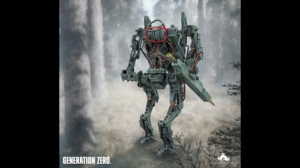

Weak spots for the Seekers
thrusters:
Weak spots for the Runners
top canister:
Weak spots for the Hunters
The two side panels and the gas canister on the back:

Weak spots for the Harvesters
Weak spots for the Tanks
back to main page